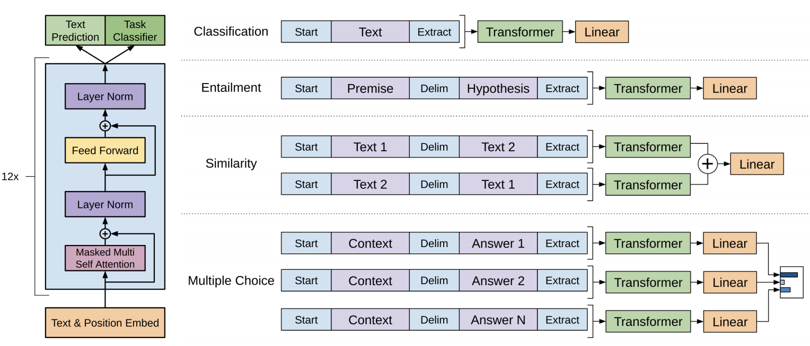

Developed the first open-source Turkish TTS model using SpeechT5. Fine-tuned the transformer-based architecture on a Turkish Voice Dataset for speech synthesis.
Neural Network Design for Solving the Data Class Imbalance Problem - Final Thesis
Designed a novel neural network to tackle class imbalance in datasets, incorporating dynamic data adjustment.
Enhanced model performance by implementing automatic hyperparameter optimization and ensemble learning techniques, significantly improving accuracy in imbalanced datasets.

LLM From Scratch and Instruction Finetuning with LoRA
Developed a GPT model from scratch, leveraging attention mechanisms and various byte pair encoder implementations to optimize text data processing.
Performed instruction finetuning with LoRA, followed by a benchmark evaluation using MMLU-style Q&A, LLM-based scoring, and human ratings.
Evaluated model efficiency through various attention mechanism implementations and examined PyTorch buffers for causal attention.
Deepfake Detection Survey and a VLP Approach
Conducted a comprehensive survey of deepfake detection techniques, comparing methods in cross-datasets.
Introduced a Vision-Language Pre-training (VLP) approach to enhance detection by analyzing image manipulations through targeted questioning. Addressed cross-dataset generalization challenges.
Predicting the Next Frames of a Video with AI | Next-Frame Prediction
Addressed the limitations of CNNs in predicting future video frames by implementing advanced models like CNN-LSTM and PredRNN, and conducted a comparative analysis of their effectiveness.
Solved a real-life problem by using cloudiness satellite image data of EUMETSAT on the weather forecast.
HairCLIPv2: Unifying Hair Editing via Proxy Feature Blending
Benchmarked success using various techniques to solve the brain tumor segmentation problem.
In addition to deep learning techniques such as SegNet and UNet; used machine learning techniques such as Adaptive Thresholding, Otsu's Method, K-Means, and Fuzzy C-Means.